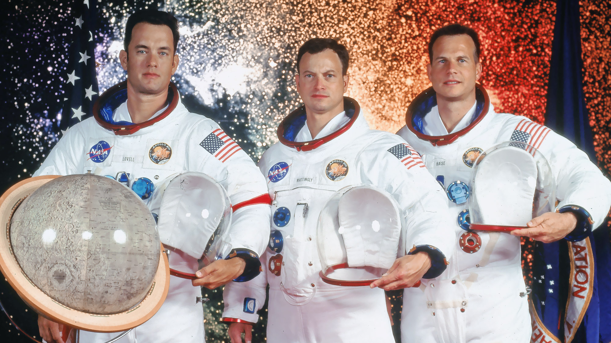

James Lovell was one of NASA's most experienced astronauts and one of the few people to travel to the Moon twice. Before Apollo 13, he flew on Gemini 7, Gemini 12, and Apollo 8, becoming one of the first humans to orbit the Moon.
As commander of Apollo 13, Lovell faced one of the most serious emergencies in the history of spaceflight when an oxygen tank exploded during the journey to the Moon. Throughout the crisis, he remained calm and helped coordinate efforts between the crew and mission control. His leadership played a major role in the crew's successful return to Earth.
Today, Lovell is remembered as one of NASA's greatest commanders and a symbol of perseverance under pressure.
Jack Swigert joined the Apollo 13 crew only days before launch after the original Command Module Pilot was exposed to German measles. Despite the last-minute change, Swigert quickly adapted to the mission and performed his duties effectively.
He is famous for reporting the spacecraft's emergency to mission control after the explosion, beginning one of the most dramatic chapters in space exploration history. Throughout the mission, Swigert worked tirelessly to conserve power and keep critical spacecraft systems functioning.
Although Apollo 13 was his only spaceflight, Swigert became one of the most recognizable astronauts of the Apollo era due to his role in the mission's successful rescue.
Fred Haise served as Lunar Module Pilot aboard Apollo 13 and would have become one of the next astronauts to walk on the Moon had the mission proceeded as planned.
After the explosion, Haise helped transform the Lunar Module into an emergency lifeboat that sustained the crew during their return journey. He endured difficult conditions, including cold temperatures and limited supplies, while continuing to perform his duties.
Although he never reached the lunar surface, Haise's professionalism and resilience contributed significantly to the crew's survival and the mission's successful conclusion.